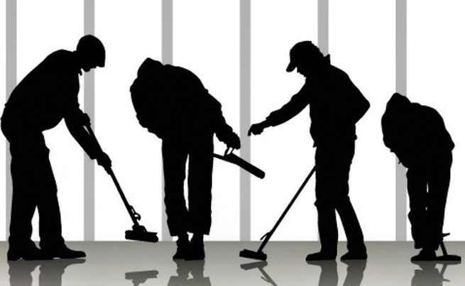

SERVICIO DE LIMPIEZA
LIMPIEZA Y MANTENIMIENTO
CONOCE MAS SOBRE NUESTRO SERVICIOS CON SOLO
REGISTRARTE
¿Por qué usar nuestros Servicio ?
La limpieza es un factor clave a la hora de hacer negocios, ya sea como imagen para los clientes y proveedores o para mejorar la productividad de la empresa que brinda a sus trabajadores un mejor ambiente.
Las condiciones de higiene de las instalaciones tienen especial relevancia, por lo que no puede estar en manos inexpertas. Las empresas concentran a grupos de personas que transitan por áreas comunes en donde se comparten equipamientos y es necesario mantener una correcta limpieza que asegure la salubridad del ambiente laboral.
Las bacterias o gérmenes que se quedan en las superficies se deben exterminar lo más rápido posible para evitar su propagación y que no pongan en riesgo al personal.
Por ello es tan importante la ayuda profesional de limpieza de empresas, que son especialistas en técnicas para limpiar y en el manejo de productos que, en muchos casos, requieren formación específica.
Imagínate algo tan sencillo como una persona que realiza la labor de limpieza de manera empírica, pasa por la superficie de tu escritorio el mismo trapo que utilizó para limpiar la superficie del lavamanos del baño ¿Asqueroso verdad?, o que la misma persona inexperta utilice un limpiador ácido para baldosas desconociendo su modo de uso, tiempo de acción, enjuague y correcta ventilación.

Limpieza Manual
Limpieza por inmersion o remojo
Limpieza con espuma
Limpieza por aspersión
Limpieza IN SITU
A continuación detallamos los tipos más comunes de limpieza industrial.
